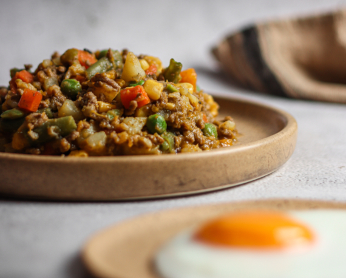

Charquican

El charquicán es un guiso tradicional en la gastronomía de Chile
Ingredientes
- 1 kilo de asiento o carne molida
- 2 1/2 cdas de aceite
- 1 cebolla picada fina
- 2 dientes de ajo picados fino
- 6 papas en cubos de 1,5 cm
- 400g de zapallo camote en cubos de 1,5 cm
- 1,5 cdtas de Ají de Color
- 1/2 cdta de Comino Molido
- 2,5 cdtas de Orégano Entero
- 600ml de agua
- 1 sobre de Caldo en Polvo de Carne
- 2 tazas de choclo
- 2 tazas de porotos verdes cortados a lo largo
Preparación
- Cortar la carne en cubos de 1 cm (si se usa carne molida, saltar este paso).
- En una olla grande, calentar el aceite a fuego medio. Agregar la carne y cocinar por 5 minutos. Agregar la cebolla y el ajo y cocinar hasta que la cebolla esté blanda y transparente.
- Agregar las papas y zapallo, revolver bien. Incorporar el Ají de Color, Comino Molido y Orégano Entero, revolver hasta integrar. Agregar el agua y el Caldo en Polvo de Carne. Dejar hervir y luego reducir el fuego y cocinar por 25 minutos o hasta que las verduras estén blandas.
- Por último, agregar el choclo y los porotos verdes, cocinar por 5 minutos o hasta que estén blandos.
- Con la ayuda de una cuchara de palo, aplastar levemente las papas y zapallo y servir.